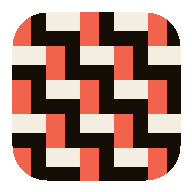
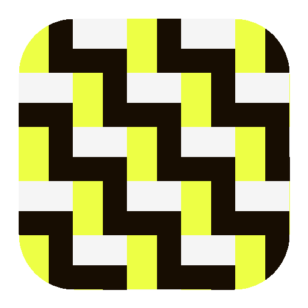

织文
AI 起书（短篇）
AI 起书（长篇）

把设定织成一张不会自相矛盾的网
长篇写到几十章，前后矛盾不是没注意，是记不住。织文把角色、伏笔、时间线落成可校验的状态，写的时候只喂有预算的上下文。
11 条机器规则查前后矛盾，带引证、可跳转
角色 / 世界 / 伏笔 / 状态矩阵，结构化不落空
纯前端 · 数据只在你浏览器里
创建第一篇小说
载入示例书看看
AI 起书（短篇）
AI 起书（长篇）
没有 API Key？续写 / 润色才需要它；不配也能用状态管理与连续性检查。
yu.ai 收录了各家大模型的免费额度，注册即用
AI 工具箱
设置